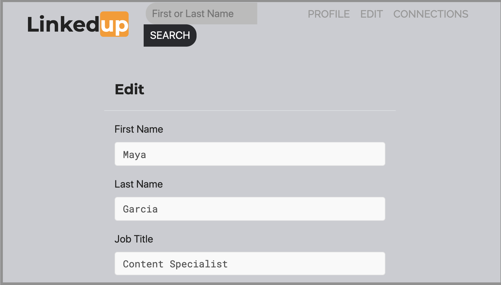
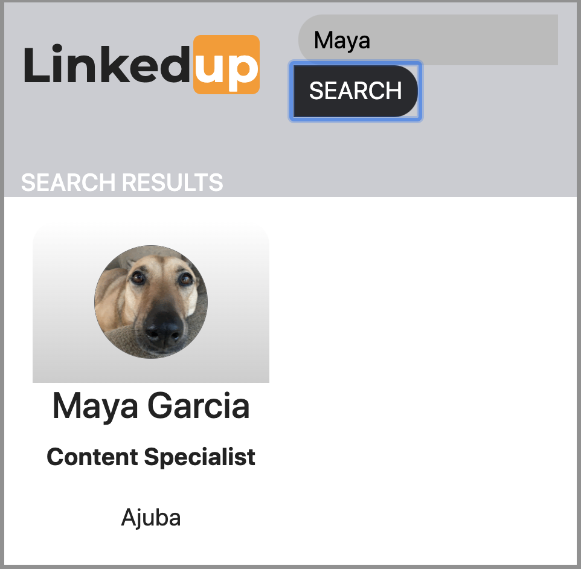

进行容器间调用
对于开发人员而言，Internet Computer 区块链最重要的功能之一是能够从另一个容器智能合约调用一个容器智能合约中的函数。 这种在容器之间进行调用的能力——有时也称为容器间调用——使您能够在多个 dapp 中重用和共享功能。
例如，您可能想要创建一个用于专业网络、组织社区活动或举办筹款活动的 dapp。 这些 dapp 中的每一个都可能具有社交组件，使用户能够根据某些标准或共同兴趣识别社交关系，例如朋友和家人或现任和前任同事。
为了解决这个社交组件，您可能想要创建一个存储用户关系的单一容器智能合约，然后编写您的专业网络、社区组织或筹款应用程序来导入和调用容器中定义的社交连接功能。 然后，您可以构建其他应用程序以使用社交连接容器智能合约或扩展社交连接容器提供的功能，以使其对更广泛的其他开发人员社区有用。
基于 Motoko 的 LinkedUp 示例 dapp 提供了一个开放专业网络的简单实现，演示了如何在项目中使用容器间调用。
LinkedUp 示例 dapp 使用以下容器智能合约实现:
-
linkedupcanister 智能合约为用户创建和存储基本的个人资料信息，包括工作经验和教育背景。 -
connectd容器智能合约创建并存储用户的连接。 -
linkedup_assets容器智能合约存储定义用户界面的前端资产——包括 JavaScript、HTML 和 CSS 文件
开始之前
在构建示例 dapp 之前，请验证以下内容:
-
您已按照下载并安装中的说明下载并安装了 {sdk-short-name} 包。
-
您已经停止了
dfx提供的本地容器执行环境。
下载演示
要使用 LinkedUp 示例 dapp 试验容器间调用:
-
打开终端外壳并切换到您用于 Internet Computer 示例项目的文件夹。
-
克隆
linkedup存储库。git clone https://github.com/dfinity/linkedup.git -
切换到
linkedup存储库的本地工作目录。cd linkedup -
通过运行以下命令安装节点模块:
npm install如有必要，请通过运行以下命令修复发现的任何漏洞:
npm audit fix -
在文本编辑器中打开
dfx.json文件并验证dfx设置与您已安装的dfx可执行文件的版本号相同。
启动本地容器执行环境
出于开发目的，“dfx”提供了一个本地容器执行环境。 这需要一个`dfx.json` 文件，所以你应该确保你在linkedup 根目录中。
启动本地容器执行环境:
-
在本地计算机上打开一个新的终端窗口或选项卡。
-
如有必要，导航到项目的根目录。
-
通过运行以下命令启动本地容器执行环境:
dfx start --background本地容器执行环境完成启动操作后，可以继续下一步。
注册容器标识符
一旦本地容器执行环境启动并运行，您就可以为您的项目生成唯一的容器标识符。
要注册容器标识符:
-
如果需要，请检查您是否仍在项目目录中。
-
通过运行以下命令为项目注册唯一容器标识符:
dfx canister create --all该命令显示在
dfx.json配置文件中定义的容器的容器标识符。"connectd" canister created with canister id: "75hes-oqbaa-aaaaa-aaaaa-aaaaa-aaaaa-aaaaa-q" "linkedup" canister created with canister id: "cxeji-wacaa-aaaaa-aaaaa-aaaaa-aaaaa-aaaaa-q" "linkedup_assets" canister created with canister id: "7kncf-oidaa-aaaaa-aaaaa-aaaaa-aaaaa-aaaaa-q"
请记住，因为您正在运行本地容器执行环境，所以这些标识符仅在本地容器执行环境中有效。 要在 Internet Computer 区块链主网上部署容器，您必须使用
--network命令行选项指定适当的目标。
构建和部署演示项目
要构建和部署 LinkUp 示例 dapp，请执行以下步骤:
-
如有必要，通过运行
pwd命令检查您是否仍在项目目录中。 -
通过运行以下命令构建 LinkedUp 容器智能合约:
dfx build -
通过运行以下命令在本地容器执行环境中部署项目:
dfx canister install --all您应该会看到
connectd、linkedup和linkedup_assets容器智能合约的容器标识符以及类似于以下内容的消息:Installing code for canister connectd, with canister_id 75hes-oqbaa-aaaaa-aaaaa-aaaaa-aaaaa-aaaaa-q Installing code for canister linkedup, with canister_id cxeji-wacaa-aaaaa-aaaaa-aaaaa-aaaaa-aaaaa-q Installing code for canister linkedup_assets, with canister_id 7kncf-oidaa-aaaaa-aaaaa-aaaaa-aaaaa-aaaaa-q
-
复制“dfx canister install”命令返回的“linkedup_assets”容器标识符。
在这个示例 dapp 中，只有
linkedup_assets容器智能合约包含用于访问 dapp 用户界面的前端资产。 因此，要在浏览器中打开 dapp，您需要指定linkedup_assets容器标识符。 -
在您的网络浏览器中打开
linkedup_assets容器智能合约。例如，如果本地容器执行环境绑定到默认的 localhost 地址和端口号，则 URL 类似于以下内容:
http://127.0.0.1:8000/?canisterId=7kncf-oidaa-aaaaa-aaaaa-aaaaa-aaaaa-aaaaa-q
创建个人资料和连接
要运行 LinkedUp 示例 dapp 的演示，请执行以下步骤:
-
打开浏览器选项卡或窗口。
-
输入 Web 服务器主机名、端口和
canisterId关键字，然后粘贴linkedup_assets容器标识符作为要显示的 URL。127.0.0.1:8000/?canisterId=<ic-identifier-for-linkedup-assets>
浏览器显示介绍页面。
系统会自动生成公私密钥对来建立您访问容器智能合约的身份，因此在使用服务前无需提供用户名和密码或注册账户来存储您的身份。
-
点击*登录*。
浏览器显示一个空的个人资料页面。

-
单击*编辑*，输入个人资料信息，复制并粘贴头像照片的图像地址，然后单击*提交*。

单击 Submit 后，您将拥有一个可以查看的包含一些工作历史的个人资料。
例如:
添加另一个配置文件
此时，没有其他配置文件可搜索或添加为连接。 要试用搜索和连接功能，您可以:
-
运行一个脚本，用一些额外的配置文件填充示例 dapp。
-
通过打开私人窗口手动创建配置文件。
对于本教程，您将手动创建另一个配置文件。
要添加具有不同身份的用户配置文件:
-
在浏览器窗口的右上角，单击相应的图标以显示浏览器的菜单选项。
例如，如果您使用的是 Google Chrome，请单击垂直椭圆以显示更多菜单。
-
如果您使用的是 Google Chrome，请单击 New Incognito Window；如果您使用的是 Firefox，请单击 New Private Window，以使您能够导航到容器，而无需在初始浏览器连接到容器时生成用户身份。
-
将您的第一个浏览器会话中的 URL 复制并粘贴到隐私浏览窗口中，然后单击 Login。
请注意，私人浏览窗口中没有个人资料，但您的原始个人资料仍然在您的初始浏览器选项卡中可见。
-
单击*编辑*，输入个人资料信息，复制并粘贴头像照片的图像地址，然后单击*提交*。
单击 Submit 后，您将获得第二份个人资料，其中包含一些可以查看的工作历史。
例如:

-
输入您创建的第一个配置文件中的名字或姓氏（例如，如果您为 Maya Garcia 创建了配置文件，请输入 Maya），然后单击 Search。

显示匹配您的搜索条件的配置文件。

-
从搜索结果中选择联系人，等待显示连接按钮，然后单击*连接*。

当连接请求完成时，第二个配置文件显示与第一个配置文件的连接。 例如:

-
使用您的原始配置文件返回浏览器选项卡。
如果您想在原始配置文件和您在隐私浏览窗口中创建的配置文件之间创建连接，您可以通过重复搜索、选择和连接步骤来实现。
浏览配置文件
现在您已经探索了示例 dapp 的基本功能，您已经了解了如何使用配置设置和源文件的一些上下文。
浏览配置文件:
-
切换到
linkedup目录，然后打开项目的dfx.json文件。 -
请注意，定义了两个主要的容器智能合约——
connectd和linkedup——每个都有一个main.mo源文件。 -
请注意，
linkedup_assets容器智能合约指定了main.js的前端入口点以及 CSS 和 HTML 文件形式的资产。 -
请注意，dapp 配置为使用默认 IP 地址和端口号在本地容器执行环境上进行部署。
探索连接的源代码
社交关系容器智能合约的源代码，connectd，被组织成以下文件:
-
digraph.mo文件提供了创建顶点和边的有向图以描述用户连接的功能。 -
main.mo包含用于定义与用户配置文件关联的连接的参与者和关键函数，这些连接可由 LinkedUp 示例 dapp 调用。 -
types.mo文件定义了将顶点映射到用户身份的自定义类型，以便在digraph和main程序文件中使用。
探索链接源代码
具有工作经历和教育背景的专业档案的源代码被组织成以下文件:
-
main.mo文件包含 LinkedUp 示例 dapp 的参与者和关键函数。 -
types.mo文件定义了描述用户身份和配置文件字段的自定义类型，这些字段在`linkedup` canister 智能合约的`main` 程序文件中导入和使用。 -
utils.mo文件提供了辅助函数。
查询和更新操作
在使用 LinkedUp 示例 dapp 时，您可能会注意到某些操作（例如查看个人资料或执行搜索）几乎会立即返回结果。 其他操作（例如创建配置文件或添加连接）需要更长的时间。
这些性能差异说明了在 linkedup 容器智能合约中使用查询和更新调用之间的差异。
例如，在`src/linkedup/main.mo文件中，+create+和+update+函数是更新调用，会改变容器智能合约的状态，因此需要经过共识，但是 程序使用 `+get+ 和 search 函数的查询调用来查看或搜索配置文件:
// Profiles
public shared(msg) func create(profile: NewProfile): async () {
directory.createOne(msg.caller, profile);
};
public shared(msg) func update(profile: Profile): async () {
if(Utils.hasAccess(msg.caller, profile)) {
directory.updateOne(profile.id, profile);
};
};
public query func get(userId: UserId): async Profile {
Utils.getProfile(directory, userId)
};
public query func search(term: Text): async [Profile] {
directory.findBy(term)
};
容器智能合约之间的交互
在这个示例 dapp 中，“linkedup”容器智能合约利用了“connectd”容器中定义的函数。 这种分离简化了每个容器智能合约中的代码，更重要的是，说明了如何通过从一个或多个其他容器调用一个容器智能合约中定义的通用函数来扩展项目。
要使一个容器智能合约中定义的公共功能在另一个容器智能合约中可用:
-
在调用容器中添加
import语句。在本例中，公共函数在`connectd
容器智能合约中定义，并由linkedup`容器智能合约调用。因此，`src/linkedup/main.mo`包含以下代码:
// 使 Connectd 应用的公共方法在本地可用 导入连接“容器:连接”； -
使用
canister.function语法调用导入的 canister 智能合约中的公共方法。在这个例子中，
linkedup容器智能合约调用了导入的connectd容器智能合约中的connect和getConnections函数。
您可以在 main.mo 源文件中看到启用 linkedup 容器智能合约和 connectd 容器智能合约之间交互的代码。
例如，src/connectd/main.mo 定义了以下函数:
+
actor Connectd {
flexible var graph: Digraph.Digraph = Digraph.Digraph();
public func healthcheck(): async Bool { true };
public func connect(userA: Vertex, userB: Vertex): async () {
graph.addEdge(userA, userB);
};
public func getConnections(user: Vertex): async [Vertex] {
graph.getAdjacent(user)
};
};由于 Import 语句，connectd 函数可用于 linkedup 容器智能合约， src/linkedup/main.mo 包含以下代码:
// Connections
public shared(msg) func connect(userId: UserId): async () {
// Call Connectd's public methods without an API
await Connectd.connect(msg.caller, userId);
};
public func getConnections(userId: UserId): async [Profile] {
let userIds = await Connectd.getConnections(userId);
directory.findMany(userIds)
};
public shared(msg) func isConnected(userId: UserId): async Bool {
let userIds = await Connectd.getConnections(msg.caller);
Utils.includes(userId, userIds)
};
// User Auth
public shared query(msg) func getOwnId(): async UserId { msg.caller }
};